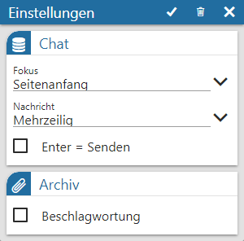
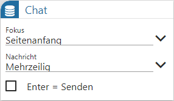

Durch Anwahl des Buttons "Einstellungen" in der Kopfleiste des WinLine Share können individuelle Einstellung für die Anzeige und das Programmverhalten getroffenen werden.

Folgende Einstellungen stehen zur Verfügung:
Chat

Ø Fokus
An dieser Stelle erfolgt die Definition, ob bei Anwahl eines Chats der Anfang oder das Ende des Chatverlaufs angezeigt werden soll.
Ø Nachricht
Mit Hilfe dieser Option kann hinterlegt werden, ob bei längeren Nachrichten nur die 1. Zeile oder der gesamte Text angezeigt werden soll.
Hinweis
Unabhängig von dieser Einstellung kann der Text einer jeden Nachricht durch Anwahl der Icons bzw. immer auf- bzw. zugeklappt werden.
Ø Enter = Senden
Generell kann eine neue Nachricht über die Taste F5 oder das Symbol gesendet werden. Ist auch ein Senden via Enter-Taste gewünscht, so ist dieses Option zu aktivieren.
Archiv
Ø Beschlagwortung
Wenn bei dem Hinzufügen eines Dokuments (einem sogenannten Upload) eine individuelle Beschlagwortung hinterlegt werden soll, so ist diese Option zu aktivieren.
Buttons
Ø Einstellung speichern
Durch Anwahl des Buttons "Speichern" werden die Einstellungen gespeichert, angewendet und das Fenster geschlossen.
Ø Einstellungen initialisieren
Durch Anwahl dieses Buttons werden die Einstellungen des Fensters auf den Standard zurückgesetzt.
Ø Ende
Durch Anwahl des Buttons "Ende" wird das Einstellungsfenster geschlossen und nicht gespeicherte Änderungen verworfen.